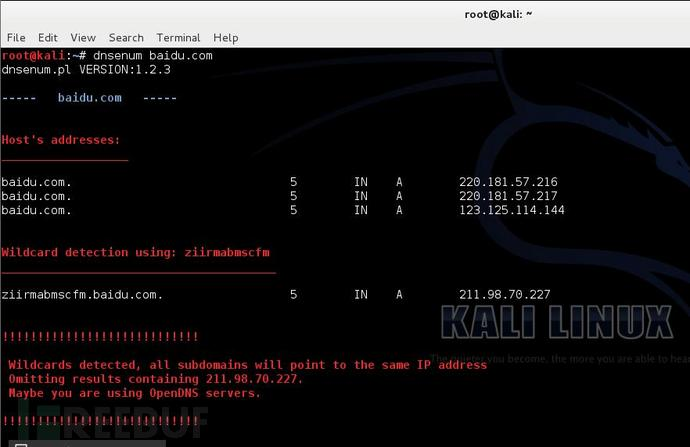

我们可以利用dnsenum从DNS服务器上获取以下信息：
除了被用来获取DNS信息，dnsenum还具有以下特点：
使用：
# dnsnum baidu.com
fierce是使用多种技术来扫描目标主机IP地址和主机名的一个DNS服务器枚举工具。运用递归的方式来工作。它的工作原理是先通过查询本地DNS服务器来查找目标DNS服务器，然后使用目标DNS服务器来查找子域名。fierce的主要特点就是可以用来地位独立IP空间对应域名和主机名。
通过一个例子来演示：
#fierce -dns baidu.com -threads 3